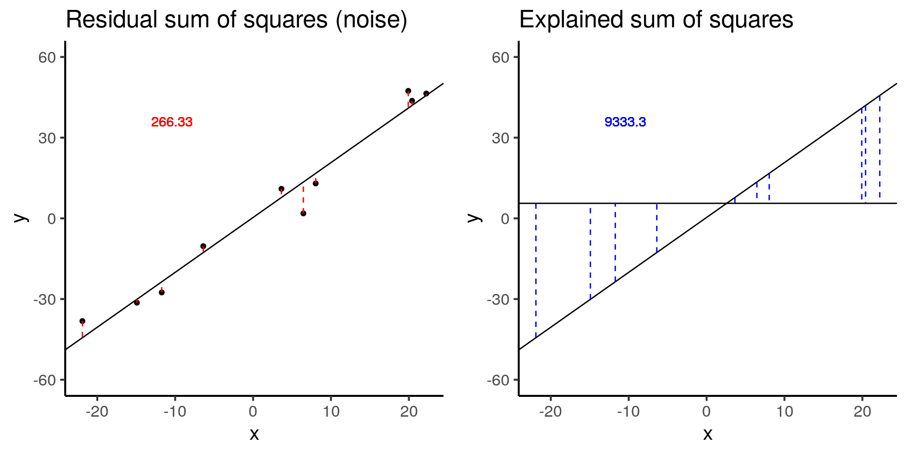

Last updated: 2019-04-10
Checks: 6 0
Knit directory: dc-bioc-limma/analysis/
This reproducible R Markdown analysis was created with workflowr (version 1.2.0.9000). The Checks tab describes the reproducibility checks that were applied when the results were created. The Past versions tab lists the development history.
Great! Since the R Markdown file has been committed to the Git repository, you know the exact version of the code that produced these results.
Great job! The global environment was empty. Objects defined in the global environment can affect the analysis in your R Markdown file in unknown ways. For reproduciblity it’s best to always run the code in an empty environment.
The command set.seed(12345) was run prior to running the code in the R Markdown file. Setting a seed ensures that any results that rely on randomness, e.g. subsampling or permutations, are reproducible.
Great job! Recording the operating system, R version, and package versions is critical for reproducibility.
Nice! There were no cached chunks for this analysis, so you can be confident that you successfully produced the results during this run.
Great! You are using Git for version control. Tracking code development and connecting the code version to the results is critical for reproducibility. The version displayed above was the version of the Git repository at the time these results were generated.
Note that you need to be careful to ensure that all relevant files for the analysis have been committed to Git prior to generating the results (you can use wflow_publish or wflow_git_commit). workflowr only checks the R Markdown file, but you know if there are other scripts or data files that it depends on. Below is the status of the Git repository when the results were generated:
Ignored files:
Ignored: .Rhistory
Ignored: .Rproj.user/
Untracked files:
Untracked: analysis/table-s1.txt
Untracked: analysis/table-s2.txt
Untracked: code/tb-scratch.R
Untracked: data/counts_per_sample.txt
Untracked: docs/table-s1.txt
Untracked: docs/table-s2.txt
Untracked: factorial-dox.rds
Note that any generated files, e.g. HTML, png, CSS, etc., are not included in this status report because it is ok for generated content to have uncommitted changes.
These are the previous versions of the R Markdown and HTML files. If you’ve configured a remote Git repository (see ?wflow_git_remote), click on the hyperlinks in the table below to view them.
| File | Version | Author | Date | Message |
|---|---|---|---|---|
| html | 41b57ee | John Blischak | 2019-02-26 | Build site. |
| html | 2372aa1 | John Blischak | 2019-01-09 | Build site. |
| html | f440a87 | John Blischak | 2018-08-20 | Build site. |
| html | 4976490 | John Blischak | 2018-08-20 | Build site. |
| Rmd | 1920833 | John Blischak | 2018-08-20 | Refactor first edition of chapter 1 into distinct lessons. |
The goal is to provide some visualizations to help you understand linear models.
library("broom")
library("cowplot")
library("dplyr")
library("ggplot2")
theme_set(theme_classic(base_size = 16))
library("knitr")
opts_chunk$set(fig.width = 10, fig.height = 5, message = FALSE)Visualize boxplots of a gene that is clearly differentially expressed (a) and one that is unclear due to increased variance (b).
df_vis <- data.frame(status = rep(c("con", "treat"), each = 50)) %>%
mutate(gene_de = c(rpois(n() / 2, lambda = 12), rpois(n() / 2, lambda = 30)),
gene_var =c(rpois(n() / 2, lambda = 15) + rnorm(n() / 2, sd = 10),
rpois(n() / 2, lambda = 25) + rnorm(n() / 2, sd = 10)))
box_de <- ggplot(df_vis, aes(x = status, y = gene_de)) +
geom_boxplot() +
theme_classic(base_size = 16) +
ylim(0, 40) +
labs(x = "Treatment status", y = "Gene expression level",
title = "Differential expression")
box_var <- ggplot(df_vis, aes(x = status, y = gene_var)) +
geom_boxplot() +
theme_classic(base_size = 16) +
ylim(0, 40) +
labs(x = "Treatment status", y = "Gene expression level",
title = "High variance")
plot_grid(box_de, box_var, labels = letters[1:2])Warning: Removed 1 rows containing non-finite values (stat_boxplot).Warning: Removed 8 rows containing non-finite values (stat_boxplot).
As you just visualized, differential expression describes the situation in which a gene has a different mean expression level between conditions. While some gene expression patterns are easily diagnosed as differential expression or not from a quick visualization, you also saw some examples that were more ambiguous. Furthermore, you need a method that is more robust than a quick visual inspection and also scales to thousands of genes. For this you will use the tools of statistical inference to determine if the difference in mean expression level is larger than that expected by chance. Specifically, you will use linear models to perform the hypothesis tests. Linear models are an ideal choice for genomics experiments because their flexibility and robustness to assumptions allow you to conveniently model data from various study designs and data sources.
You should have already been introduced to linear models, for example in a DataCamp course such as Correlation and Regression, or in an introductory statistics course. Here I’ll review the terminology we will use in the remainder of the course, how to specify a linear model in R, and the intuition behind linear models.
\[ Y = \beta_0 + \beta_1 X_1 + \epsilon \]
In this equation of a linear model, Y is the response variable. It must be a continuous variable. In the context of differential expression, it is a relative measure of either RNA or protein expression level for one gene. \(X_1\) is an explanatory variable, which can be continuous or discrete, for example, control group versus treatment, or mutant versus wild type. \(\beta_1\) quantifies the effect of the explanatory variable on the response variable. Furthermore, we can add additional explanatory variables to the equation for more complicated experimental designs. Lastly, models the random noise in the measurements.
In R, you specify a linear model with the function lm. This uses R’s formula syntax. On the left is the object that contains the response variable, and to the right of the tilde are the objects that contain the explanatory variables.
lm(y ~ x1)A second explanatory variable can be added with a plus sign.
\[ Y = \beta_0 + \beta_1 X_1 + \beta_2 X_2 + \epsilon \]
lm(y ~ x1 + x2)The simulation below demonstrates how the statistical significance of the computed F-statistic of a linear model is equally affected by the noise (the residual sum of squares) and the signal (the explained sum of squares).
# Simulate a linear regression.
#
# n = sample size
# effect = slope
# error = standard deviation of distribution of residuals
# seed = seed for random number generator
#
# Returns a data.frame with the following columns:
#
# x Explanatory variable
# y Response variable
# y_bar Mean of response variable
# intercept Intercept of least squares regression line
# slope Slope of least squares regression line
# y_hat Fitted values
# fstat F-statistic
# ss_exp Explained sum of squares
# ss_res Residual sum of squares (noise)
sim_lm <- function(n, effect, error, seed = 1) {
stopifnot(is.numeric(n), n > 0, length(n) == 1)
stopifnot(is.numeric(effect), length(effect) == 1)
stopifnot(is.numeric(error), error > 0, length(error) == 1)
stopifnot(is.numeric(seed), length(seed) == 1)
set.seed(seed)
x = runif(n, min = -25, max = 25)
y = x * effect + rnorm(n, sd = error)
y_bar = mean(y)
mod <- lm(y ~ x)
coefs <- coef(mod)
intercept <- coefs[1]
slope <- coefs[2]
y_hat = fitted(mod)
anova_tidy <- tidy(anova(mod))
fstat <- anova_tidy$statistic[1]
ss <- anova_tidy$sumsq
ss_exp <- ss[1]
ss_res <- ss[2]
stopifnot(ss_exp - sum((y_hat - y_bar)^2) < 0.01)
stopifnot(ss_res - sum(residuals(mod)^2) < 0.01)
return(data.frame(x, y, y_bar, intercept, slope, y_hat, fstat, ss_exp, ss_res,
row.names = 1:n))
}
# Visualize the residual sum of squares
plot_ss_res <- function(d) {
ggplot(d, aes(x = x, y = y)) +
geom_point() +
geom_abline(aes(intercept = intercept, slope = slope)) +
geom_linerange(aes(ymin = y, ymax = y_hat), color = "red",
linetype = "dashed") +
geom_text(aes(x = quantile(x, 0.25), y = quantile(y, 0.75),
label = round(ss_res, 2)), color = "red") +
labs(title = "Residual sum of squares (noise)") +
ylim(-60, 60)
}
# Visualize the explained sum of squares
plot_ss_exp <- function(d) {
ggplot(d, aes(x = x, y = y)) +
geom_abline(aes(intercept = intercept, slope = slope)) +
geom_hline(aes(yintercept = y_bar)) +
geom_linerange(aes(ymin = y_hat, ymax = y_bar), color = "blue",
linetype = "dashed") +
geom_text(aes(x = quantile(x, 0.25), y = quantile(y, 0.75),
label = round(ss_exp, 2)), color = "blue") +
labs(title = "Explained sum of squares") +
ylim(-60, 60)
}# baseline
baseline <- sim_lm(n = 10, effect = 2, error = 5)
baseline_ss_res <- plot_ss_res(baseline)
baseline_ss_exp <- plot_ss_exp(baseline)
plot_grid(baseline_ss_res, baseline_ss_exp)
baseline$fstat[1][1] 280.3557The baseline simulation has an F-statistic of 280.3557372.
# Increased error
more_error <- sim_lm(n = 10, effect = 2, error = 10)
more_error_ss_res <- plot_ss_res(more_error)
more_error_ss_exp <- plot_ss_exp(more_error)
plot_grid(more_error_ss_res, more_error_ss_exp)
more_error$fstat[1][1] 72.89125Doubling the error decreases the test statistic by a factor of 4.
# Decreased signal
less_signal <- sim_lm(n = 10, effect = 1, error = 5)
less_signal_ss_res <- plot_ss_res(less_signal)
less_signal_ss_exp <- plot_ss_exp(less_signal)
plot_grid(less_signal_ss_res, less_signal_ss_exp)
less_signal$fstat[1][1] 72.89125Similarly, halving the signal decreases the test statistic by a factor of 4.
sessionInfo()R version 3.5.3 (2019-03-11)
Platform: x86_64-pc-linux-gnu (64-bit)
Running under: Ubuntu 18.04.2 LTS
Matrix products: default
BLAS: /usr/lib/x86_64-linux-gnu/atlas/libblas.so.3.10.3
LAPACK: /usr/lib/x86_64-linux-gnu/atlas/liblapack.so.3.10.3
locale:
[1] LC_CTYPE=en_US.UTF-8 LC_NUMERIC=C
[3] LC_TIME=en_US.UTF-8 LC_COLLATE=en_US.UTF-8
[5] LC_MONETARY=en_US.UTF-8 LC_MESSAGES=en_US.UTF-8
[7] LC_PAPER=en_US.UTF-8 LC_NAME=C
[9] LC_ADDRESS=C LC_TELEPHONE=C
[11] LC_MEASUREMENT=en_US.UTF-8 LC_IDENTIFICATION=C
attached base packages:
[1] stats graphics grDevices utils datasets methods base
other attached packages:
[1] knitr_1.22.6 dplyr_0.8.0.1 cowplot_0.9.4 ggplot2_3.1.0 broom_0.5.1
loaded via a namespace (and not attached):
[1] Rcpp_1.0.1 pillar_1.3.1 compiler_3.5.3
[4] git2r_0.25.1 plyr_1.8.4 workflowr_1.2.0.9000
[7] tools_3.5.3 digest_0.6.18 evaluate_0.13
[10] tibble_2.1.1 nlme_3.1-137 gtable_0.3.0
[13] lattice_0.20-38 pkgconfig_2.0.2 rlang_0.3.3
[16] yaml_2.2.0 xfun_0.6 withr_2.1.2
[19] stringr_1.4.0 generics_0.0.2 fs_1.2.7
[22] rprojroot_1.2 grid_3.5.3 tidyselect_0.2.5
[25] glue_1.3.1 R6_2.4.0 rmarkdown_1.12
[28] purrr_0.3.2 tidyr_0.8.3 magrittr_1.5
[31] whisker_0.3-2 backports_1.1.3 scales_1.0.0
[34] htmltools_0.3.6 assertthat_0.2.1 colorspace_1.4-1
[37] labeling_0.3 stringi_1.4.3 lazyeval_0.2.2
[40] munsell_0.5.0 crayon_1.3.4